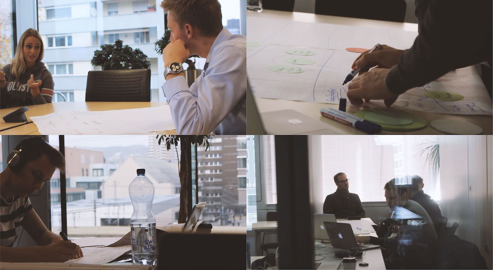
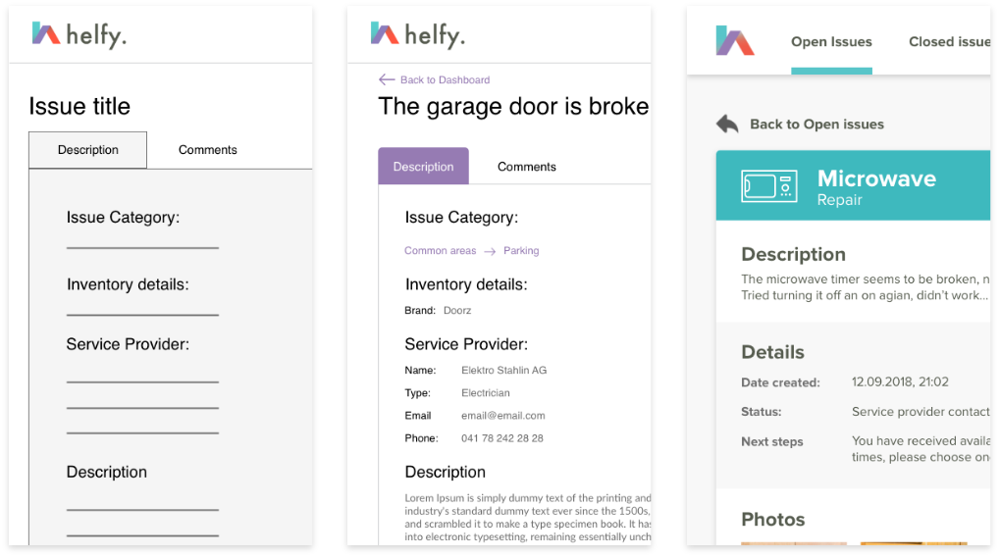
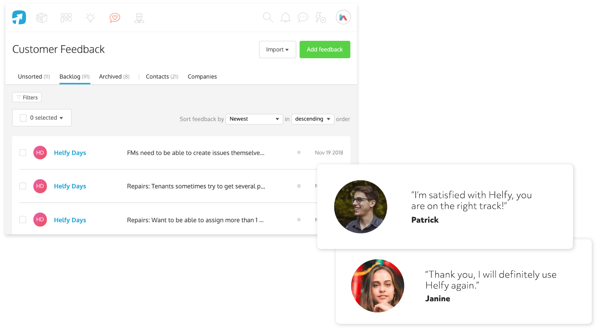
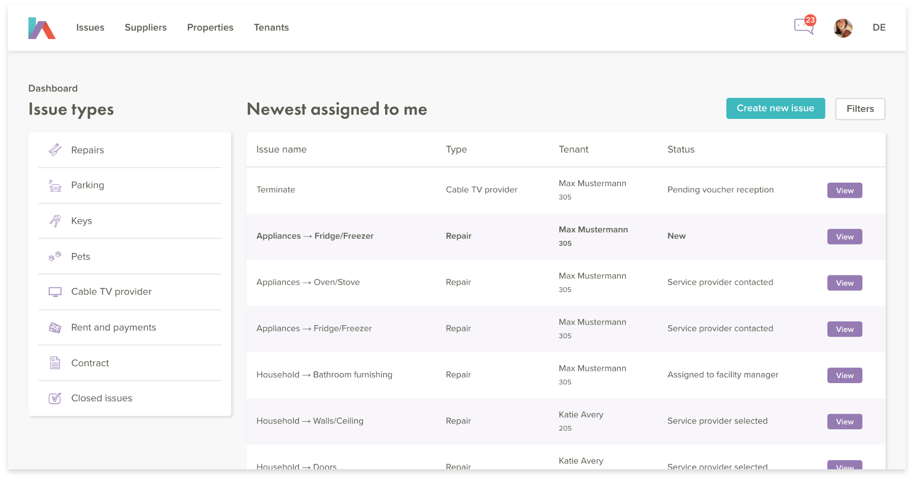
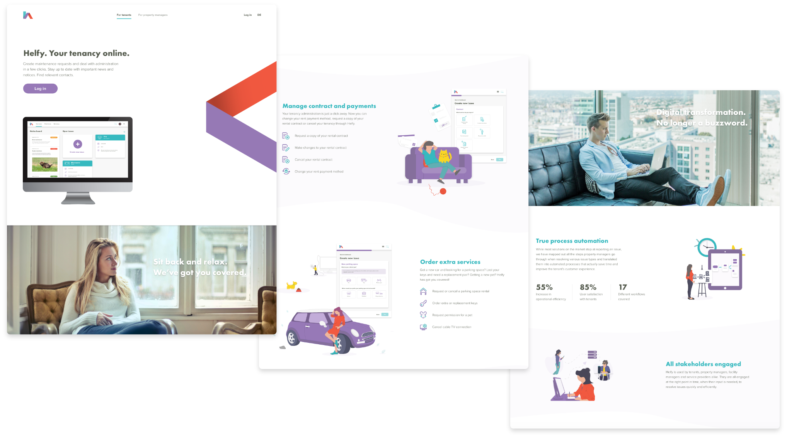

IMAGO was mandated to turn Helfy from an idea into a working MVP within 3 months, to be tested with select properties of Helvetia Real Estate. Following a successful first pilot, Helfy was continuously developed in an Agile manner to include new functionality and expand the pilot to over 1’500 properties across 4 cities in Switzerland.
| Type | Web application |
|---|---|
| Date | Nov. 17’ - Present |
| Scope | UX/UI design & Product owner |
| Contract | IMAGO for Helvetia |
Helfy is a textbook example of applying lean start-up and agile methodologies in order to deliver a successful product to market, despite time limitations and working within a corporate environment. My role was to own the entire design process and the product itself, from start to finish.
Following an intense period of 100+ hours of workshops, stakeholder interviews and workplace shadowing, I mapped out key operational processes in Helvetia real estate management using UML workflow diagrams. Pain points across the user journeys of tenants, property managers and external service providers were identified and solutions on how to ease them through digitisation and automation proposed.
I ensured that early prototypes of the MVP were iterated on and passed through quick validation and usability tests, while preparing comprehensive specs to reduce error margin and development time. These included epics and user stories, high fidelity interactive prototypes, Gherkin scenarios (single source of truth), domain modelling, workflow diagrams, as well as all content, email notifications and a global feature map.
Once released on production, I analysed feedback from users (forms, email, in-person), internal usage data and analytics tools to formulate hypotheses to be tested and to build up a backlog of ideas to be evaluated against the project’s strategic objectives. These I worked into the Helfy feature backlog, kicking off another round of prototyping and spec work.
Throughout the duration of the project, I continued to deepen my understanding of the key user personas and release product improvements on a regular basis. I worked closely with the tech team on evaluating new features from a technical requirements perspective and planning our bi-weekly sprints, managing releases and centralising the product management using ProdPad.
Following the decision to bring Helfy to market and leverage its potential to be licensed by other real estate management companies in Switzerland, I completely re-designed the Helfy homepage. Instead of serving simply as a way to access the user account, the site now uses custom graphics and product screenshots to clearly communicate Helfy’s value proposition for tenants and property managers alike.
